The class as a whole spent the first few days setting their AWS and github login.
There were some social interaction games in our groups, but most of the time was spent on ajusting the new technology resources.
We did an outside activity on the 24th of August.
The outside activity was a marble track game where many of the students had to work together.
Using half cut tubes the group of students made a road for the marble.
The goal of the game was to move the marble into the bucket with only the few tubes given and cooperation.
All the students ran to the back of the line to catch the marbles with the tubes to make new paths to prevent it from fall, but we failed multiple times.
When I was going to the back of the line to deliver the tube, someone's foot tripped me.
The teacher told the students to go inside the classroom before the bell rand and in the end none of the students were able to get the marble into the bucket.
I had to go to the nurses office to get bandages for my bleeding palm.
In table groups students would work on drafting the design of the rube goldberg machine.
First we started by being informed of the materials we would be able to use for the final production.
Next we individually designed the rube goldberg machine.
After finishing our individual designs we shared it with the our group mates, coming up with a combined final draft of the project.
The rube goldberg machine was designed for popping a balloon using different materials.
Although we had some complications in the 3d desinging website called TinkerCad, we were able to create a good draft of the final project.
On August 31st we had a test on the saftey slides.
I was able to answer a few questions with ease, while some were a bit harder.
After working on the test we filled out a packet by watching a video on mechanical engineering.
The crash course video mentioned about how mechanical engineering is one of the oldest engineering subject ever used and how it was used to improve efficiency in the past.
9/5-9/7 Week 3 (Rube Goldberg)
We finished the 3d design of the rube goldberg machine in TinkerCad.
It was greatly improved and editted for the final production.
After turning it in the google classroom assignment we were instructed to work on our website.
On September 7th, we got real world materials such as cardboard, box cutter, scissors, gorilla tape, and a hard board for cutting the cardboard.
Our group made good progress and adapted to the new material building process.
Using a pencil I drew out and cut the rectange base and wall shapes with some help from my group mates.
Although there was some fooling around between some group mates, we were able to make almost one fourth of the project.
We finished the inclined plane part of the project, whcih is tallest part of our build.
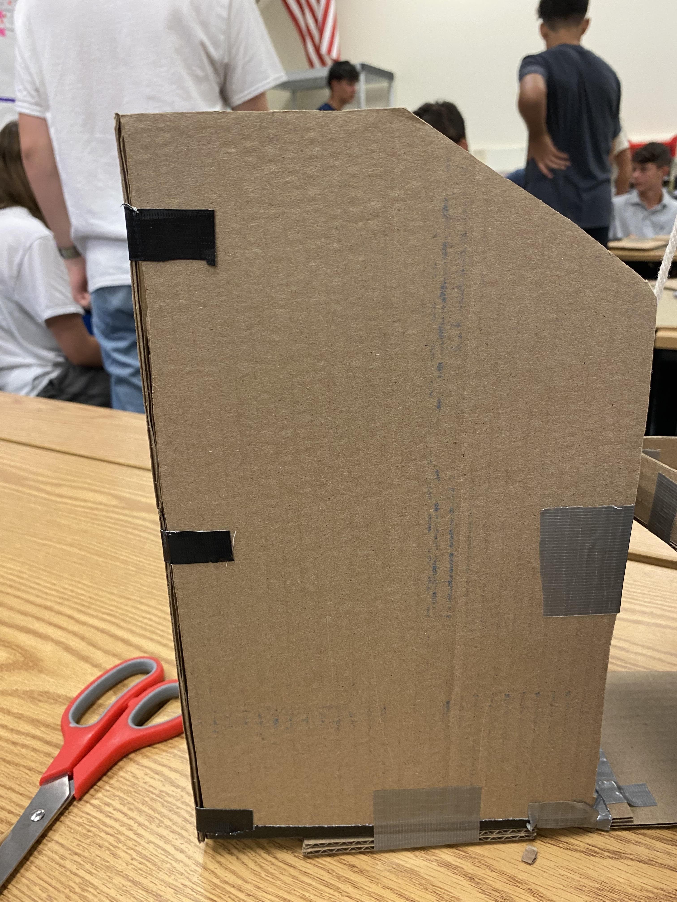
9/11-9/14 Week 4 (Rube Goldberg continued)
On Monday, we worked on the real world cardboard rube goldberg project some more.
Although monday was a banking day(shorter period), we were able to make a little bit more progress, which is better than nothing.
We were able to quickly finished because everyone cooperated quicker and better than usual.
First we got the materials from the table on the left side of the room from monday and arranged it on our tables.
We started by building another box that held the pulley.
We built the pulley with layers of taped cardboard and string holding a box and wall.
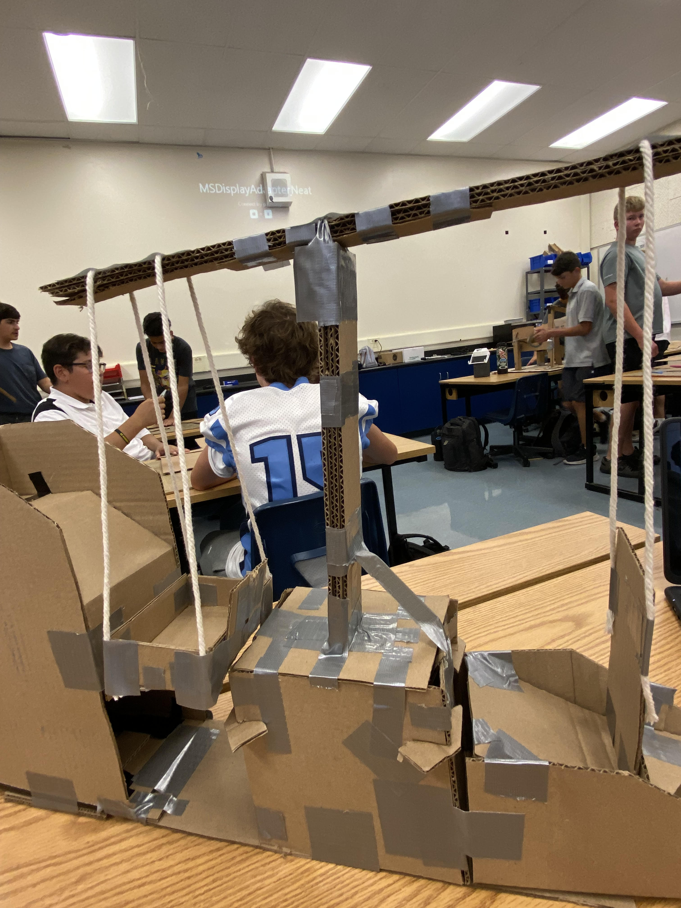
We were able to have a longer time in building because September 12 was a regular long day.
We were able to create the rest of the project build and test it out with a hot wheel car with a needle attached to it.
I let one of my group memebers to cut out the measured pieces of the project, while I assemble them.
The other teammates supported us by giving the tools.
After activating the project with the baseball the pulley lifted up because of the weight of the baseball.
When the left side of the pulley was pushed down by the baseball, the right side which is the wall, was lifted up releasing the hot wheel borrowed from another classmate.
We failed multiple times(around 3 times) and eventually found out the angle of the balloon prevented the needle from reaching the balloon properly.
After rearanging certain things we managed to show our teacher the successful outcome of the machine.
We recorded a video of it and put it in the website.
I my opinion I think the this project was sucessful and that we were able to learn a few new things.
This is the video that we recorded is below. V
9/18-9/21 Week 5 (Paper "boat" making and designing)
The class did a boat making activity with a given piece of paper, scissor, and tape.
My goal was to make a boat that would hold weight on top of water for 5 minutes.
I made an origami boat without using any scissors or tape.
After a while of working on building our paper boats, we were asked to stop crafting and find a weight in the plastic box.
Everyone in the class took some weights, until there were no more weights in the plastic box.
I was not able to get a good weight and just asked my table mates if they would be willing to share.
They agreed to share and I was able to record my weight for the boat.
Finally, we went outside, to the back of the classroom, where it connected to a back parking lot.
There was a black plastic box filled with water for us to test our boats.
Around 5 people at a time put in their paper floation devices.
As most of the students went back to the classroom to record their data, I was able to put my boat in and get data.
I filled in the worksheet in which provided us with questions for data recording.
Few minutes pass and it was almost time to go to seventh period, so we just quickly did another activity called "E".
We only were able to recieve the paper of instuctions and with only some people being able to make much progress.
Thursday comes and we continue on the "E" activity.
The students made an "E" design with specific measurements and instructions.
The teacher shuffled all the assingments and passed them to different students.
I finish making my E according to the specific student instructions on the paper and quickly graded it.
Through this "E" activity, I learned that making instructions to make an "E" and following instructions to make an "E" needs to be precise and should be done carefully for many mistakes can be made.
After turning it in, we went over engineering slides to fill in another worksheet, but many weren't able to finish.
The assignement was given to do for homeowork during the weekend.
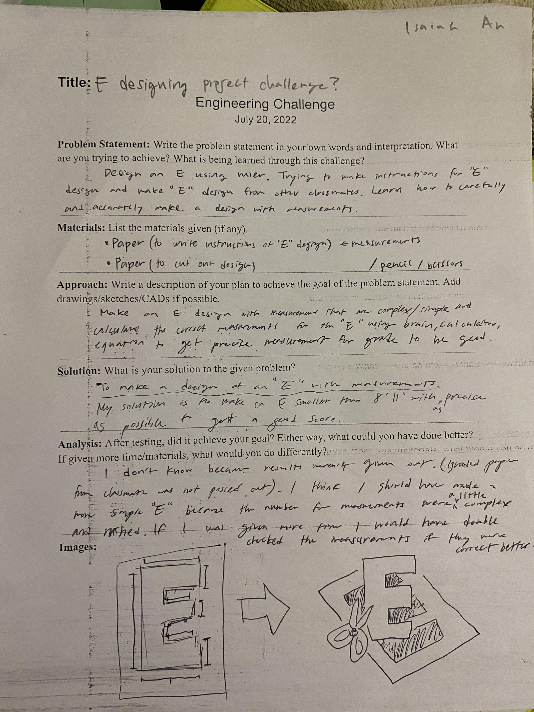
9/25-9/28 Week 6 (Dissecting and assembling computers)
On week 6, the class was given an assignment on dissecting a computer and assembling it back.
We used a slide provided in the google classroom to properly dissect the computer parts out of the computer.
Using a screw driver we unscrewed the screws, taking out the parts such as the fan, cpu, and heat sink.
Although it was quite easy to take out the parts, assembling it back in reverse was complicating.
Another difficult part of assembling the parts back was when screwing the cpu in place.
In order to put the cpu back, we needed two people because it was keep springing back up.
After a while, I was able to put everything back together.
The teacher instructed us to give the computer to her to check if we put it back together correctly.
My partner and I weren't able to see if it was correctly assembled because the time was insufficient.
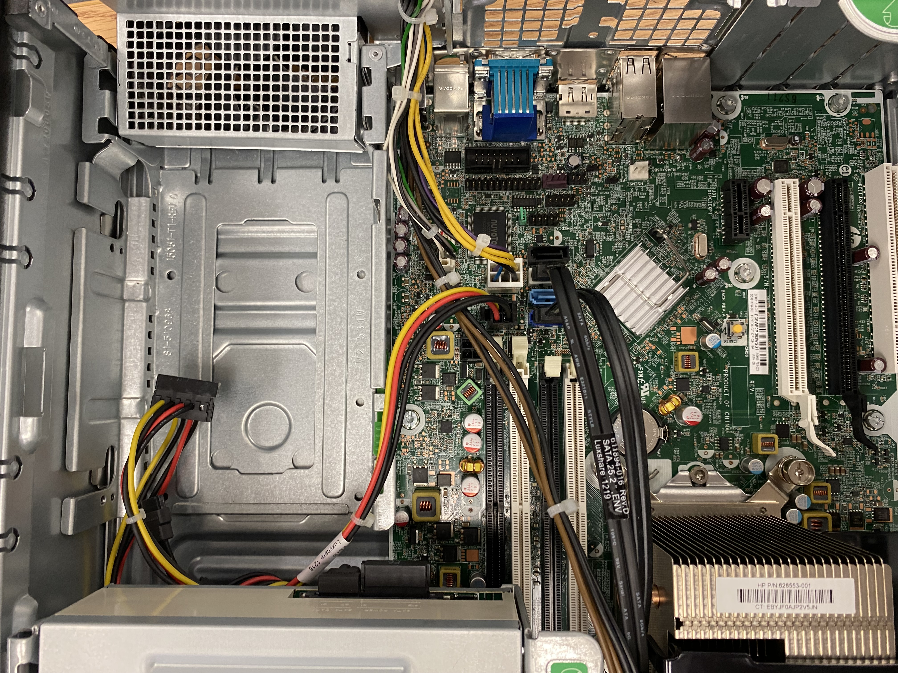
In the next class period we color coded the parts of the computer we dissected on a coloring worksheet.
I wasn't able to memorize all the parts and the teacher was able to inform us of some parts.
The teacher told us to study the coloring worksheet we did for a test next time and gave us a test.
The test was based on a slide about computer engineering.
We all closed our chromebooks and seated quietly after we finshed the test.
10/2-10/5 Week 7 (Bio-engineering)
We were shown slides about bio-engineering.
I learned that bio-engineering involves many different engineering types and propsthetics are made through bio-engineering.
Bio-engineering in the medical field involves making prosthetics and artificial body parts, such as an artificial heart.
Today, engineers have made a heart almost identically shaped like a real heart.
Although it is similar in shape and function, it can only beat 3,000 times, which lasts for about half of an hour.
It was mentioned that it is being improved and tested on by engineers.
Another point mentioned in the slides were, bio-mimicry.
Bio-mimicry involves mimicking biology and living organisms to improve devices and machines.
For example, spiders' silk production, mantis shrimps' strength and material, and geckos' claws that climb tough surfaces are being researched on to be mimicked onto certain machines.
After going over the rest of the slides, we asked to use 'Tinkercad' to create a type of prosthetic for an hypothitical animal.
I 3d designed wings that would help a bird to fly.
It took a lot of time in the beginning, but I was able to create another pair by copying and pasting the original wing.
Then, we filled out our challenge worksheet about the 3d designing of the prosthetic and submitted it in the google classroom attached with the link to the 3d model.
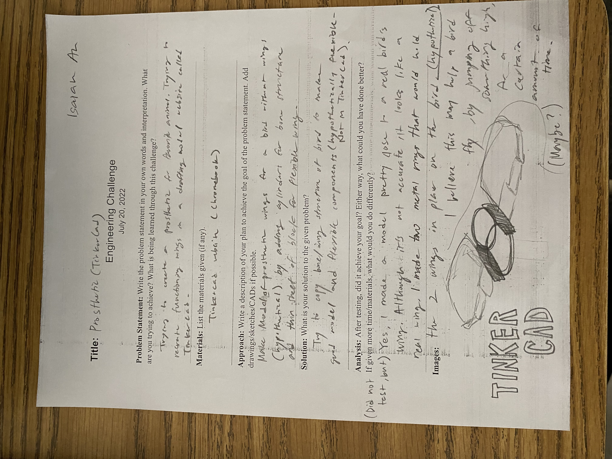
10/9-10/13 Week 8 (coca cola rocket)
Week 8 started with a unique bell schedule.
Although mondays are usually banking days, October 9 was a regular odd day(1-3-5-7).
This allowed for us to have time for a test and listening time for a presentation about Aerospace engineering.
In the presentation, it mentioned different spheres and different forces that linked to aerospace engineering and function.
After finishing the presentation the teacher informed us that she would post the slides in google classroom, allowing us to study it for the next test.
She told us to pair with new partners for the new coke rocket project.
I paired with a freshman named "Michael".
We talked for a little and went to 7th period after the bell rang.
The next class period we designed a model of a coke rocket design individually in TinkerCad.
I thought my model was good for it looked pretty similar to a real coke rocket design.
The measurements of my design were alike to the real coca cola bottle.
My bottle rocket had a coca cola bottle like body and few flaps on the sides that would hypothetically help redirect wind.
After finishing the cola bottle rocket in TinkerCad, all the students were asked to submit it into google classroom.
Then I went home and studied the aerospace engineering slides for the upcoming test.
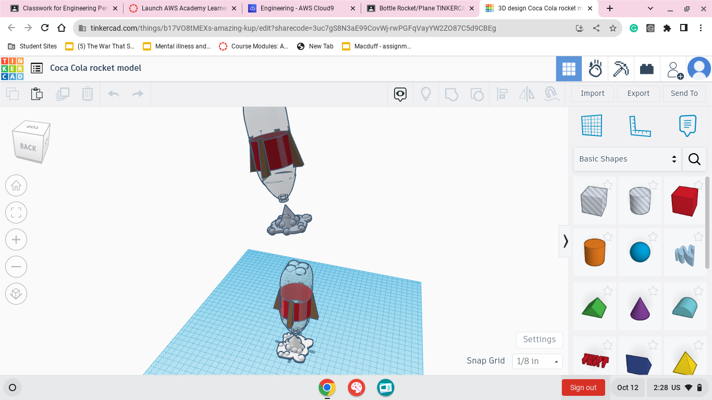
10/16-10/19 Week 9 (coca cola rocket continued)
My partner named "Michael" brought a coca cola bottle for our project.
Using the bottle we made an airplane with a pointy nose and curved wings.
The first step in making the bottle airplane was to draw and cut out the designs.
Using the tools given such as, scissors, hot glue, and hot glue gun we cut out designs and glued them on to the bottle.
Instead of going with my rocket design, we went with an airplane design with two straight wings.
When making the cone on the front of the plane we cut out a circle and bent it towards the middle multiple times making a cone.
Following the making of the airplane rocket, we went outside and arrived at the upperfield.
On the upperfield there was a pressure tube that connected to a machine that created pressure.
Each of the groups took turns trying their rocket projects.
Although lots of people did high pressure with lots of water, we did the opposite.
We put little water and pressure.
Our pressure was 30 and we only put around half a cup of water.
My partner and I anticipated that the rocket would travel a further distance, but realized that our plan didn't work after seeing blast off.
If I could do the project over again I would make a rocket with identical sides to balance the rocket better, instead of airplane wings.
I would replace the two airplane wings with smaller and balanced rocket sides.
The rocket with balanced small wings would shoot straight up, making it not flip backwards or to the side.
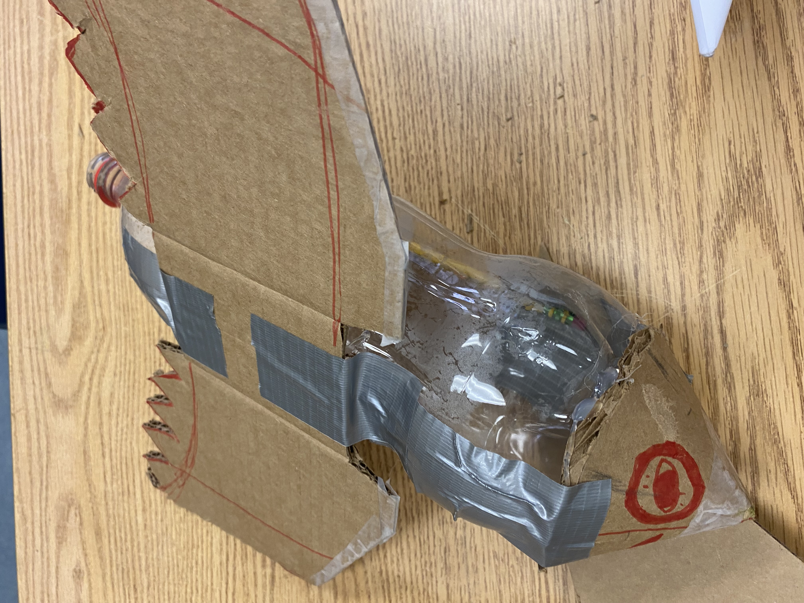
10/23-10/25 Week 10 (Filterating)
The week had a weird schedule because the monday was an regular odd day and we had friday off.
We started with learning about environmental engineering.
I learned that environmental engineering involves improving the water, air, and land for human habitation.
Through the video provided in the slides we filled out a worksheet about environmental engineering.
The next day the teacher gave us new seating charts and after 1 day of studying we were given a quiz about the environmental engineering.
The teacher afterwards gave us a water filteration project.
We first drafted the filteration with our new partners and went out to get the materials.
The base was a coca cola bottle and we had the filter in small to big order.
The order from bottom to top was cotton, sand, small rocks, then big rocks.
As the water flowed into the cola bottle, the water would get filtered from biger to smaller water ways.
Atlthough this method cleared most of the dirt and big chunks in the black water provided, the yellowy color in the water was not filtered out.
To make the water more clear I would try clean the filter with clean water to get rid of the yellowness stuck in the filter.
I believe this would help because every time I filtered the water again, it would still have the yellowness.
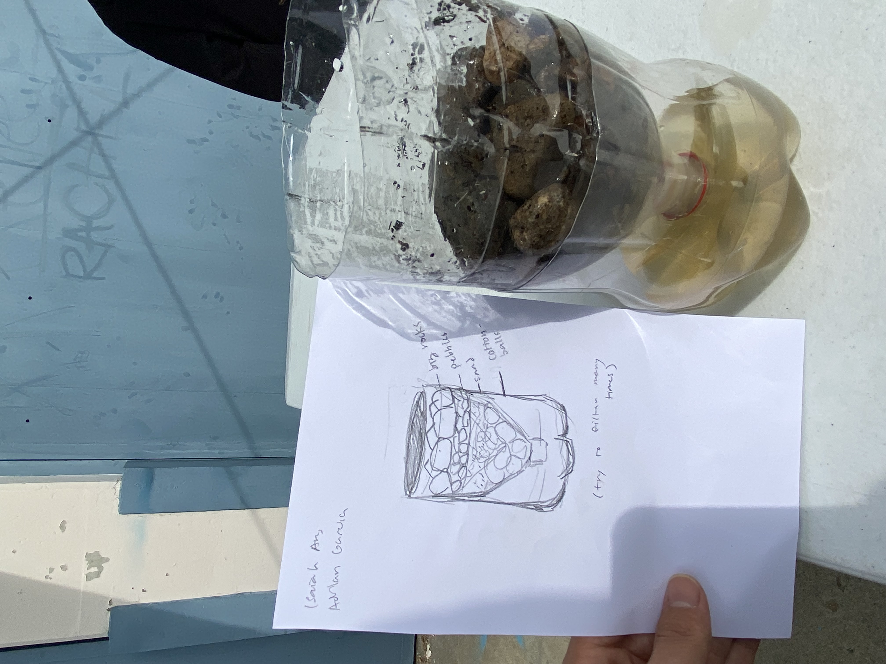
10/23-11/3 Week 11 (Breadboard)
The lesson for week 11 was about electrical engineering.
The teacher presented two google slides for electrical engineering.
The subjects being Electrical engineering components and basics of electrical engineering.
After learning some basics of electrical engineering we started to make circuits in Tinkercad.
At first it was confusing for I wasn't familiar with the bread board, but as I experimented more with the table members, I was able to finish Lab 1 and 2.
In the next class period, we were told to do a real hands on experimentation.
We were assigned numbers and given different parts for the circuit building.
Me and my table mate, Adrian were to work together to finish lab 3 and 4.
As we were building we had to record data using the multimeter, but in the end time ran out and we were only able to finished lab 3.
The teacher told everyone that it is okay because we would continue the hands on work the next time we met.
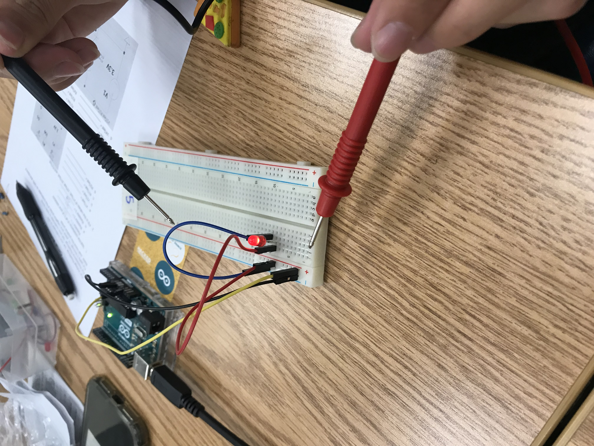
10/6-11/8 Week 12 (Breadboard continued)
On week 12, students were to work on Lab 3 and 4 using a breadboard in real life. We used different components to put together a working circuit.
We used LED's, resistors, and wires on the breadboard to create circuits in series and parallel.
Series circuits connect in a line, while parallel circuits are seperated in different lines.
We had to many different combinations of circuits to fill in the Circuit Multimeter Practice Worksheet.
For Lab 4, we used Arduino coding to program the circuits.
The goal was to make the different LED's to blink in specific order.
11/13-11/16 Week 13 (business engineering)
We learned about buisness engineering this week.
The students used the buisness engineering slides to fill out a worksheet about it.
Buisness engineering includes the fact that the customers are tbe priority and how people use marketing to sell items.
After finishing my worksheet our table group, watched a video about "Shark Tank".
The video was about creative ideas and buisness negotiation.
After seeing the example, we tried to think of different ideas too.
My group thought of different ideas, but weren't able to finalize it.
We researched about problems in the world and nessecities in a daily living, but ran out of time.
The teacher decided that the students would finish coming up with the shark tank idea during thanksgiving break.
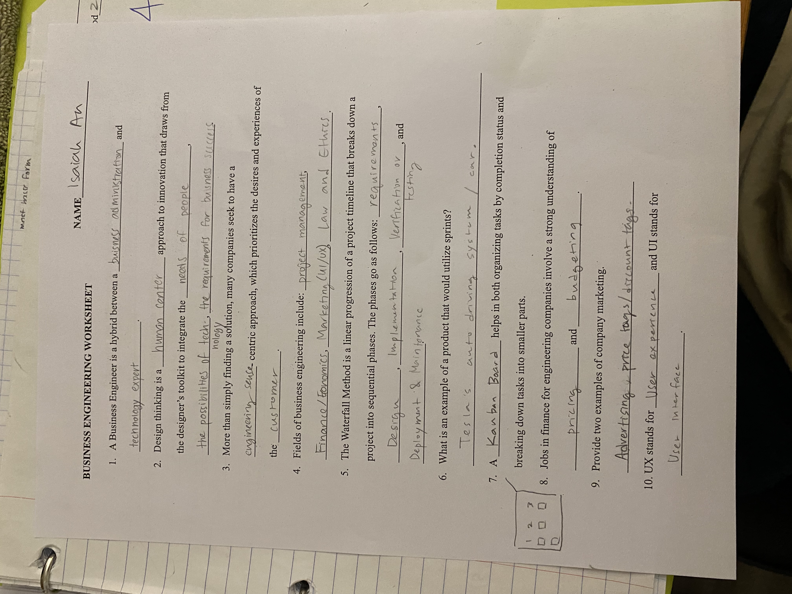
11/27-11/30 Week 14 (Shark tank pitch/business engineering continued)
We were given extra time to finish our shark tank pitch.
Our idea was called "RECYRCLES".
RECYRCLES are consumables that are cheap and nutrious.
This product was designed for poor people who can't afford meals and starve.
RECYRCLES are made from food that is going to be wasted into compress food balls.
Third world country citizens who starve would be saved through the cheap and wholesome RECYRCLES.
Groups of students one by one presented their product and were questioned by the class.
An idea different from ours that I personally thought was great was the liquid heating spoon.
We took a quiz on thursday on business engineering and started to learn about another engineering field.
12/4-12/7 Week 15 (Spaghetti Bridge)
Answer to question 1: The weight of the spaghetti bridge was 62 grams. We tried to minimize the weight on the middle, but wasn't able to meet our expectations.
Answer to question 2: The weight held by the spaghetti bridge was 1483 grams. This is the data shown in the paper our teacher gave us and I am suprised that it is more than double the weight of our bridge.
Answer to question 3: The ratio of weight of bridge to weight held was 1:16.9. The 1 is the spaghetti bridge 1 gram and the 16.9 grams is the water.
Answer to question 4: The heaviest part of the bridge was the general middle section. Most of the weight was contributed by the middle reinforcements. I think this may have been a bad decision because the breaking part was the ends.
Answer to question 5: The design of the bridge came from the slides and ideas of triangular bridges. Truss bridges with triangular shapes were researched on. Astonishingly, our design inspired by truss bridges worked well.
Answer to question 6: The design worked well, but worse than expected for it only held up double the weight of the bridge for a few seconds. I thought is was a okay try, yet also I thought it could be better.
Answer to question 7: The point of failure of the spaghetti bridge was the weak edges that broke little by little after time. That was the expected weak point because we didn't put lots of spaghettis on the edges.
Answer to question 8: We can improve the bridge by using more spaghetti in weak areas that have a high possibility of breaking. Using more spaghetti or stronger spaghetti would have prolonged the spaghetti bridge.
Answer to question 9:
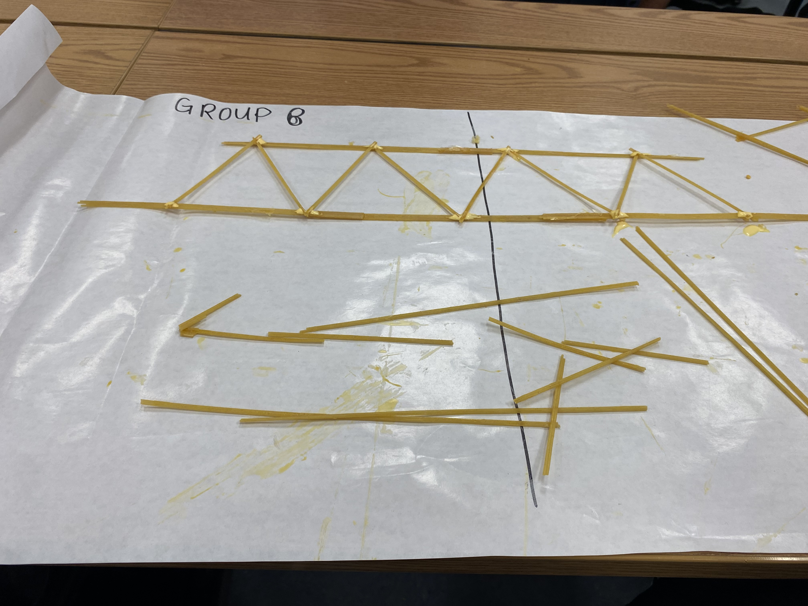
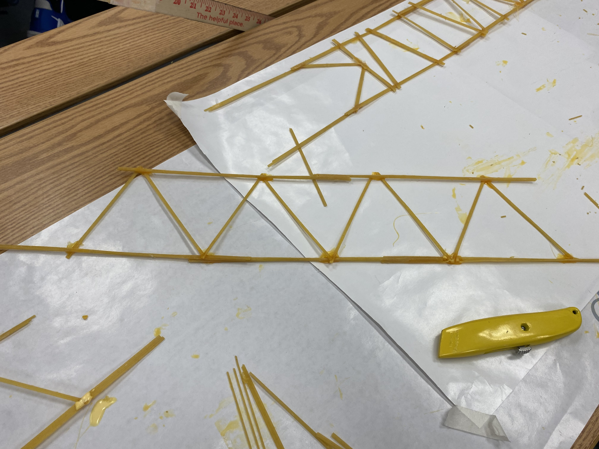
Answer to question 10:
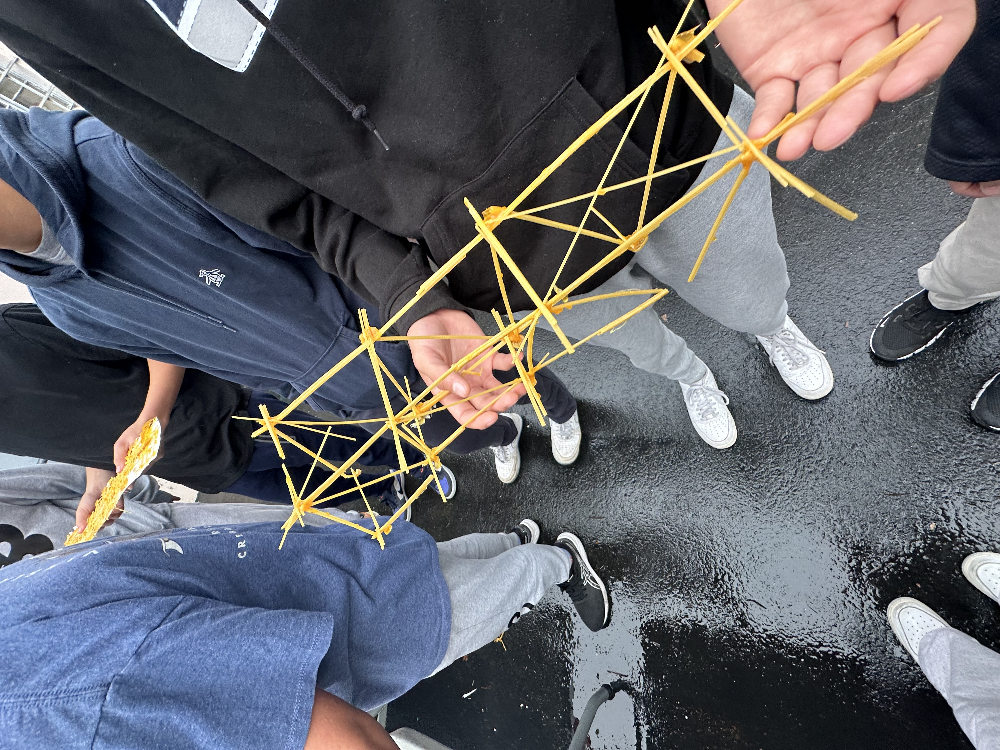
Answer to question 11:
SEMESTER_2
1/8-1/11 SM2 Week 1 (Catching up and oobleck)
There was a cyber attack that disrupted the gusd virtual systems for a few weeks.
So, we had to catch up with certain assignments that were delayed when some functions were fixed.
After catching up on website updating, worksheets,and tinkercad assignments, we were introduced to chemical engineering.
I learned that chemical engineering is similar to a chemistry, but with more engineering aspects.
For example, chemical engineering involves chemicals processes, but also includes mass producing products through chemical processes.
They use engineering to make specific pipe lines that distribute heat and materials for the product making.
After going over the chemical engineering slides we made oobleck with our new seating partners.
The oobleck activity was fun and interactive as we used corn starch and water to make a liquid yet solid like substance.
Although, it was messy it was intertaining and educational as we also learned about chemical engineers who need to ratio their products in large quantities.
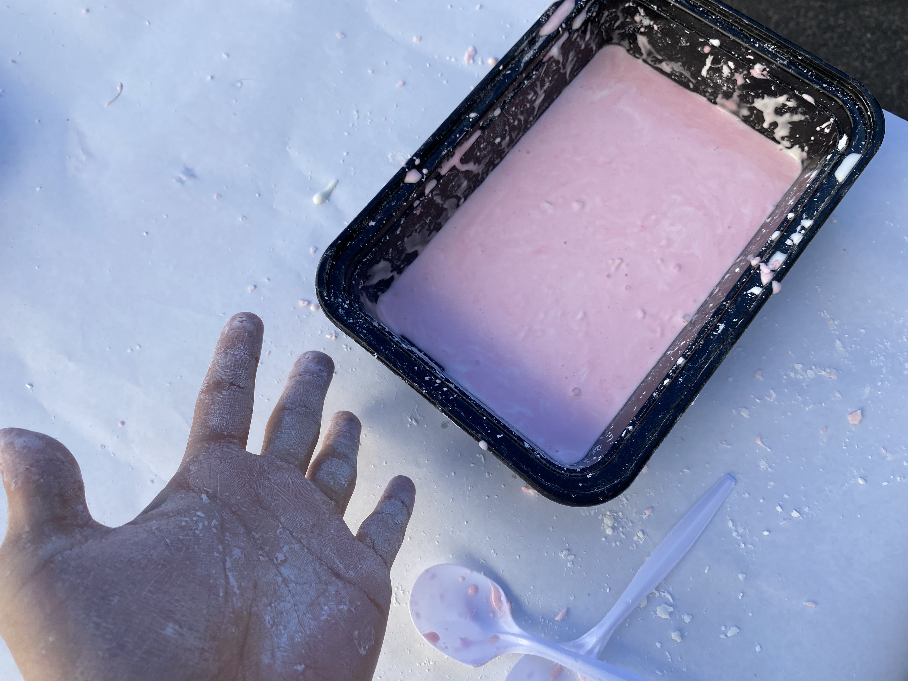
1/22-1/25 SM2 Week 2 (Mousetrap car part 1)
We began the week with choosing to do Mousetrap or Arduino cars.
By choosing the Mousetrap car we would make a diy car that is powered by a mousetrap.
By choosing the Arduino car we would build a robot car with additional coding.
I chose the Moustrap car route.
For the mousetrap proposal process, we filled in a google docs template which included the 6 followings parts:
1. Project description
2. Project research
3. Design constraints
4. Bill of Materials (BoM)
5. Schedule of Milestones
6. Team Member Biographies
My partner and I obtained knowledge from the Mark Rober Mousetrap video provided by teacher.
We also got information through websites on the internet.
We found out that for long distance mousetrap cars, we need to store energy by extending the mousetrap lever length.
Reducing friction is also a great factor.
We plan to make a long yet light car by ommitting extra weight and extending the mousetrap lever.
Through the video shown in class, I learned how mechnical advantages apply to mousewtrap car.
Less power can be used if traveling further.
The energy of a mousetrap can be slowly used if you extend length of the lever.
Although the mousetrap would move slower, it would travel further.
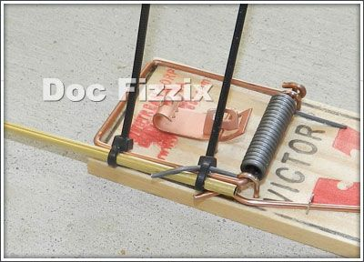
1/22-1/26 SM2 Week 3 (Mousetrap car part 2)
Our project was to be designed like a simple car containing a flat body, four identical wheels, and mousetrap in the middle.
Our calculations for the mousetrap went well because we were able to deterimine the distance it may travel through the wheel and axle ratio that connected to the length of the string.
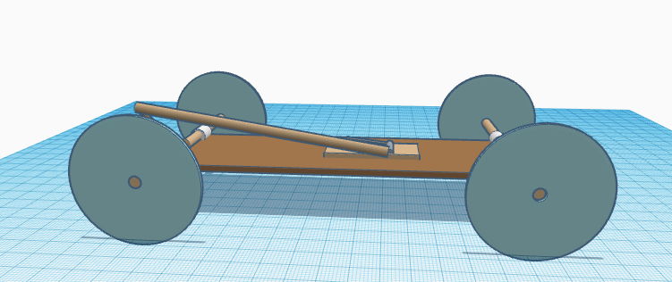
For next week (week4), we plan on securing the complete axle to the car body.
Our first phase of building, would be to prepare the cardboard body of the mousetrap car.
This allow for us to continue by putting the axle together and attaching it to the body.
1/29-2/1 SM2 Week 4 (Mousetrap car continuation part 3)
On this week we worked on stabilizing the mousetrap axle/wheel connection. We already finished building and sectioning out the body parts.
We thought that the wheels were wobbly and unstable, so we thickened the stablizing tape nuts.
By layering more cardboard and further taping the axle and wheel connection.
After testing and extra work, we were able to stablize the front wheels.
We finished the moustrap car following the attachment of the mousetrap and string with hot glue.
My partner and I plan to test the car and see if we can stablize the wheels better.
The teacher said that we would be making a second mousetrap car with more improvements and better calculations for longer distance travel.
2/5-2/9 SM2 Week 5 & 2/12-2/19 Week 6(Mousetrap car continuation part 4/5)
1. Our flaw in the design was the length of the string. The string prevented the mousetrap car from moving forward because of it's short length.
2. We will increase our string length and decrease the weight of the mousetrap car to improve the distance traveled.
3. The measured distance of the first design was 31 feet, We thought that it was good as it was much more than what we expected.
4. Our percent error was 45%. I believe the long string length wasn't calculated correctly and that was the reason for the big prediction error.
5. We started by tracing and cutting out the base of the car. Then, we made axles by snapping and smoothening the wooden rods. Finally, we ended the class by connecting the CDs with tape and cardboard to the axles.
6. We plan to make another mousetrap car with longer string and better stablized wheels.
Week 6 was the finalizing day, as we made quick progess during week 5.
We adjusted the axles better and reduced weight by cutting out rectangular holes in the cardboard base.
Reducing the weight would help the car travel further as less energy is needed to push it.
The weight diminishes the distance of the car because it would require more energy to overcome the greater gravitational energy.
Although the weight reduction was not significantly different, we got a better distance(61 feet).
The increase of string length unrestricted the axle movement.
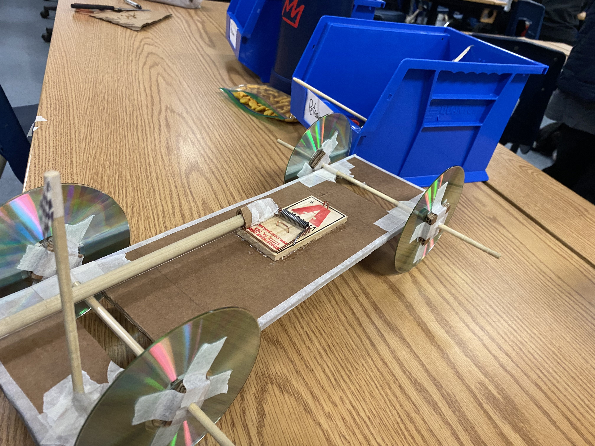
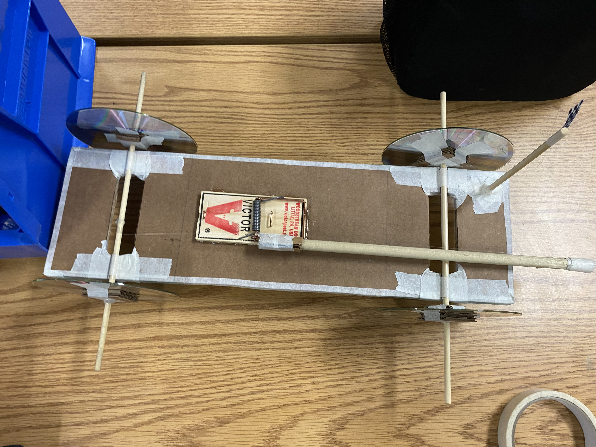
2/19-2/23 SM2 Week 7 (Mousetrap car continuation part 6)
The testing of the mousetrap car took place in the cafeteria.
I believe that the testing was good as we got a decent car distance.
We saw a similar result to our previous test in the 3rd floor(61 feet).
Our car traveled around 64 feet.
To be exact, 63 feet and 9 inches.
If we had more time, we would have improved the axle stablizations and string length.
Our axles were not straight and our string length was too short, preventing it from traveling further.
If we stablized the axles it would have been more straight and effecient.
Also, we would have less restrictened it if the string length was longer.